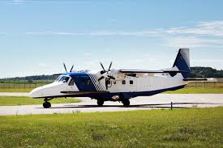
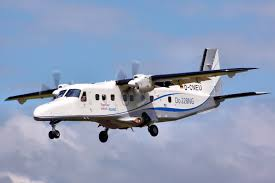
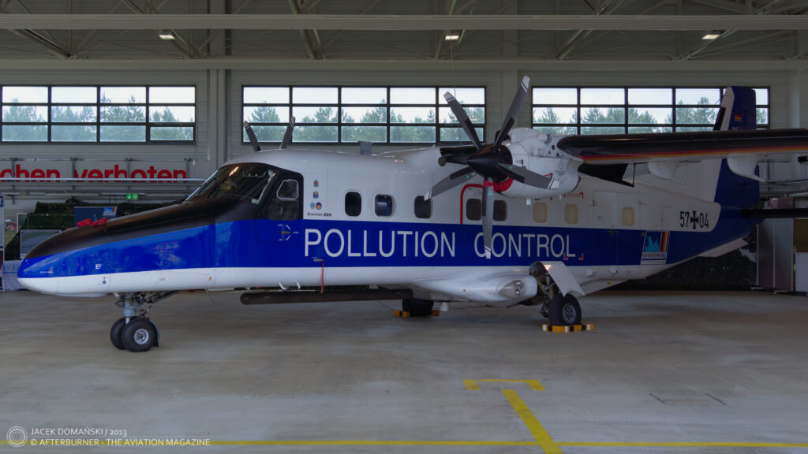
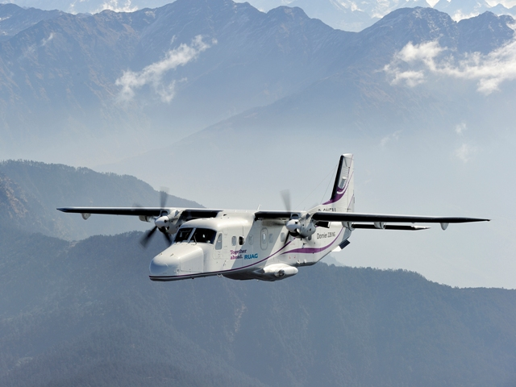
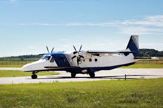
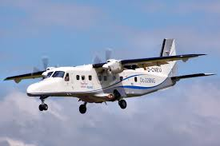
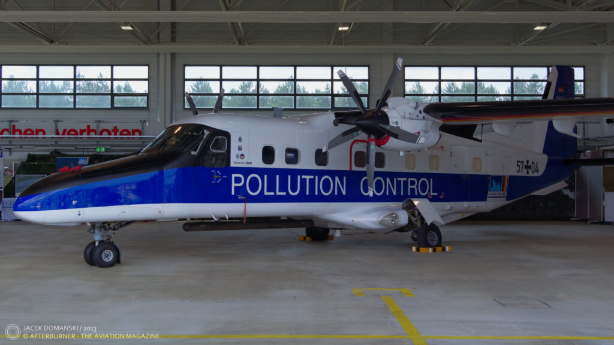
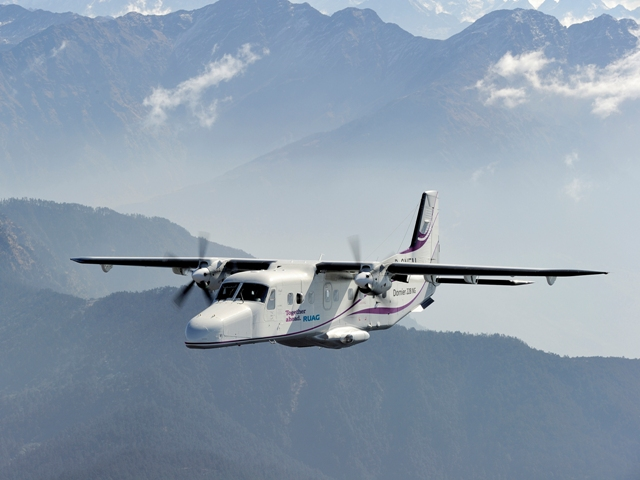

Dornier Do 228
El Dornier Do 228 es una aeronave versátil diseñada para patrullaje y rescate costero, con capacidad para 19 pasajeros. Alcanza los 428 km/h de velocidad y tiene un alcance de 1,000 km. Funciona perfectamente en pistas no preparadas, lo que lo hace ideal para vigilancia y transporte humanitario. Su diseño permite operar en condiciones complicadas con eficiencia.
 






